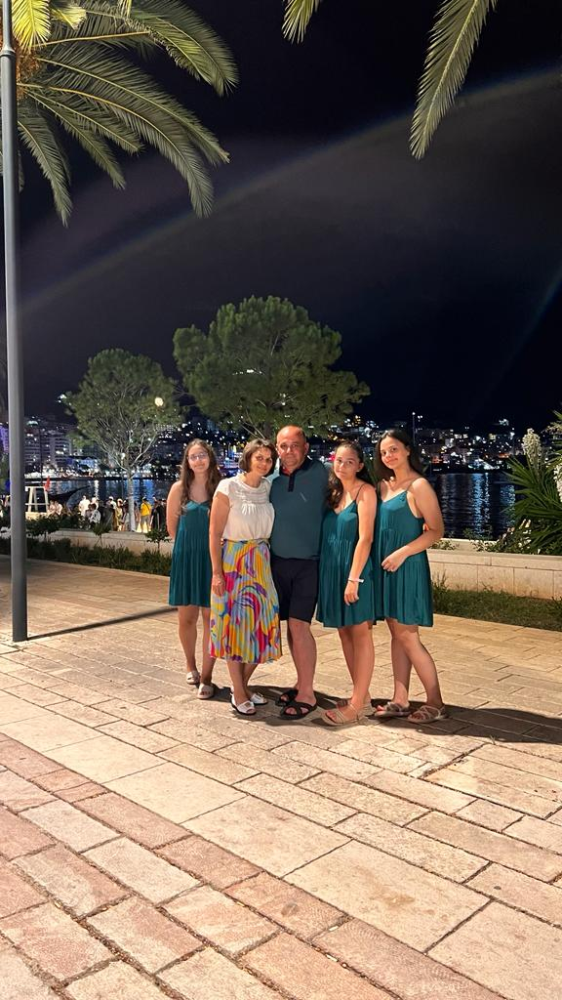

| Nume: | Istrati |
| Premume: | Raluca |
| Data nasterii: | 25 martie 2003 |
| Studenta: | Facultatea de Automatică și Calculatoare, Ingineria Sistemelor, an 2 |
| Voluntar: | AMiCUS Bucuresti |
HOME

Poza cu familia mea
Aceasta este familia mea pe care o iubesc foarte mult.
Stundenta. Voluntar. Mereu dornica sa cunosc lucuri noi.
Sunt o persoana curioasa sa mereu imi place sa descopar cat mai multe chestii noi, de aceea ma implic in cat de multe activitati pot.
Iubesc sa calatoresc si sa ascult povestile persoanelor din jur
Calatoritul ma pasioneaza de cand m-am nascut si doresc ca pe viitor sa reusesc sa vizitez cat mai multe tari. Visul meu cel mai mare e sa imi iau un an liber si sa calatoresc in toata lumea.
Povestile celor din jur sunt foarte interesante si din ele invat foarte multe, de aceea iubesc sa le ascult.